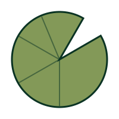

What happens inside all of this?
What happens to a teenager when the place that is supposed to feel like home becomes a source of confusion, fear, conflict, or instability?
There is research about divorce, family conflict, and emotional pressure. But there is another part of the conversation that is often missed: what does it actually feel like to be the teenager inside all of this?
That is where Beyond the Mud begins.

Why the lotus?
The lotus was not chosen because it is a pretty symbol of overcoming difficulties. The mud does not deserve credit for the flower.
The flower and the mud can exist at the same time. The mud does not disappear because the lotus blooms. The flower simply isn't limited to what is underneath it.
The Lotus Path
Not a strict set of steps, because real life doesn't work that way. People move backwards, get stuck, and start again.
Mud
What happened?
Roots
Why does it affect me this way?
Water
Who is there for me?
Light
What exists outside the problem?
Bloom
Who am I becoming?
"This is part of my life. But it is not the entirety of my life."